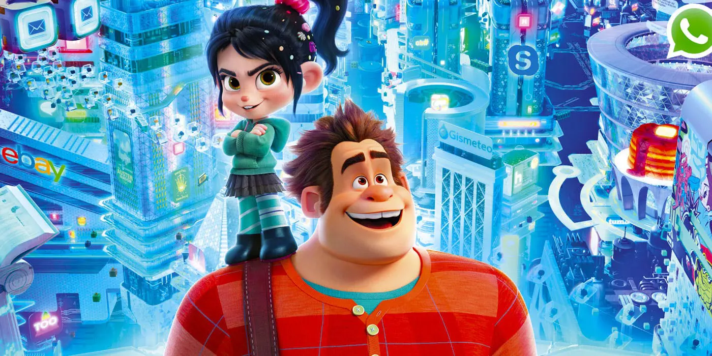

About Ralph
Wreck-It Ralph went from villain to hero, smashing stereotypes and forming friendships in the pixelated playground of arcade adventures!
Ralph and his friend Glitch.
Ralph's Characteristics
- Misunderstood: Ralph's imposing appearance and role as a villain in his game lead others to misjudge him, masking his true nature.
- Determined: He is driven by a strong desire to prove himself as more than just a bad guy, pushing him to undertake brave adventures.
- Resourceful: Ralph demonstrates creativity in problem-solving, often coming up with innovative solutions in challenging situations.
- Adaptable: He evolves from embracing his role as a villain to becoming a hero, showcasing his ability to adapt and change for the better.
- Courageous: He confronts his fears and faces daunting obstacles in order to achieve personal growth and protect his newfound relationships.
- Humorous: He has a sense of humor that adds light-heartedness to his adventures, making him an endearing and relatable character.
Friends of Ralph
Ralph starts his journey isolated in his own game, but his life takes a turn when he befriends Vanellope von Schweetz, a glitch-prone racer from Sugar Rush. Alongside his former rival, Fix-It Felix Jr., Ralph learns about collaboration and understanding. He also forges a crucial bond with Sergeant Calhoun from Hero's Duty.
Click on the links below to learn more about his friends: